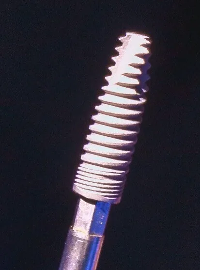
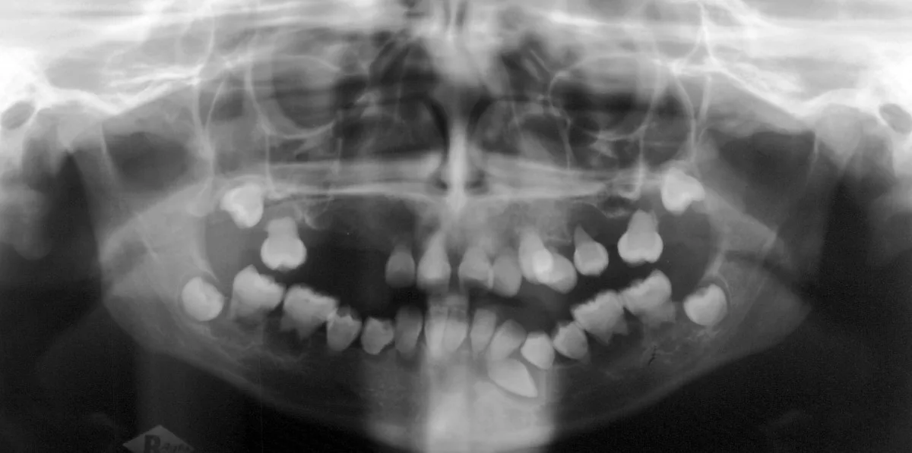

Implante unitário

Um implante com coroa para repor um dente, sem desgastar os vizinhos.
a partir deR$ 1.990

Tomografia na unidadePlanejamento digitalAté 18x sem juros
O que é. O implante é um pino de titânio colocado no osso, no lugar da raiz perdida. Sobre ele vai uma coroa ou, no protocolo, uma arcada inteira fixa.
O planejamento é feito com tomografia e coordenado pelo Dr. Carlos Andrade, diretor clínico, que define os protocolos de todas as unidades.
Carga imediata. Quando o osso tem boa qualidade, o dente provisório pode ser instalado logo depois da cirurgia. Quando não tem, esperamos a cicatrização: a decisão é tomada na tomografia, com você.
Usamos implantes de marcas com rastreio do lote e garantia do fabricante.
Quem confirma a indicação é a avaliação, com exame e, quando preciso, radiografia. Cada caso é diferente e o resultado depende da resposta de cada pessoa.

Um implante com coroa para repor um dente, sem desgastar os vizinhos.
a partir deR$ 1.990
Arcada inteira fixa sobre 4 a 6 implantes, para quem perdeu todos os dentes de cima ou de baixo.
a partir deR$ 12.900

Reconstrução do osso quando ele não é suficiente para o implante.
a partir deR$ 890
3 a 6 mesesaté a prótese definitiva
1 a 3 hde cirurgia, conforme o caso
2 a 3 diasde incômodo leve depois
Exame e tomografia na própria unidade para medir o osso disponível.
Posição de cada implante definida no computador, com o plano e o preço por escrito.
Com anestesia local e, se você quiser, sedação. Provisório no mesmo dia quando o osso permite.
De 3 a 6 meses para o osso se unir ao implante, com consultas de controle.
Coroa ou arcada em porcelana ou zircônia, ajustada à sua mordida.
Não achou a sua? Mande pelo WhatsApp: a unidade mais perto responde em horário de atendimento.
Perguntar no WhatsApp +A cirurgia é feita com anestesia local. Depois, é comum um incômodo e um pouco de inchaço por 2 ou 3 dias, controlados com remédio.
Quando o osso tem boa qualidade, sim, com um provisório. Se não tiver, o dente provisório espera a cicatrização. A tomografia mostra qual é o seu caso.
Muitas vezes sim, com enxerto antes ou junto com o implante. A tomografia responde isso na avaliação.
Depende da higiene, das revisões e da saúde de cada pessoa. Não há prazo garantido; o que garantimos é o acompanhamento e as revisões anuais.
Em até 18x sem juros no cartão ou com 5% de desconto no Pix. O valor exato sai na avaliação, por escrito.

Seu sorriso novo começa aqui
© 2026 Sorriso Prime Odontologia · Responsável técnica: Dra. Helena Viana, CRO-MG fictício · Nomes e registros fictícios · Marca criada para demonstraçãoSite de exemplo feito pela Blue Rose · Fotos: Unsplash e Wikimedia Commons (créditos abaixo)
Fotos desta página: Unsplash (licença Unsplash); Wikimedia Commons: modelo de implante por Tiia Monto (CC BY 4.0), implante por Tafur Dental Clinic Gibraltar (CC BY 4.0), raio-x panorâmico (CC BY 2.0).